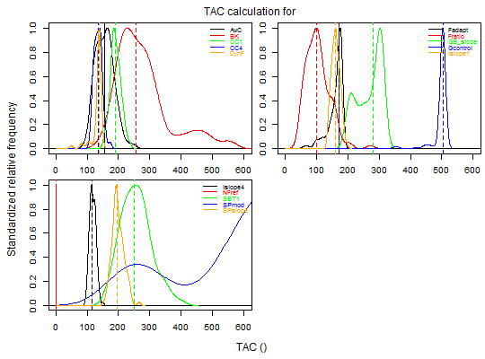
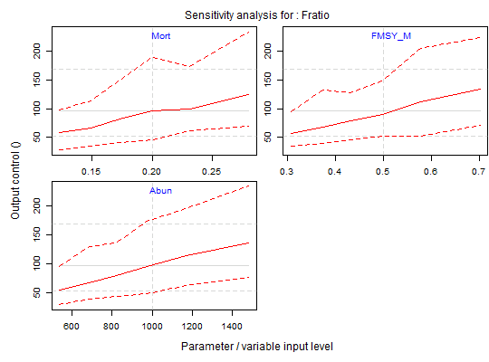

Simulation testing and implementation of data-limited fishery stock assessment methods
| Package: |
| DLMtool |
| Type: |
| Package |
| Version: |
| 3.2 |
| Date: |
| 2016-06-08 |
| License: |
| GPL-2 |
| Depends: |
| methods |
Carruthers, T.R., Punt, A.E., Walters, C.J., MacCall, A., McAllister, M.K., Dick, E.J., Cope, J. 2014. Evaluating methods for setting catch limits in data-limited fisheries. Fisheries Research. 153: 48-68.
Carruthers, T.R., Kell, L.T., Butterworth, D.S., Maunder, M.N., Geromont, H.F., Walters, C., McAllister, M.K., Hillary, R., Levontin, P., Kitakado, T., Davies, C.R. Performance review of simple management procedures. ICES Journal of Marine Science.
# --- Application to real fishery data --- library(DLMtool) library(snowfall) # load package for parallel computing sfInit(parallel=TRUE,cpus=2) # initiate the cluster with two cpussnowfall 1.84-6.1 initialized (using snow 0.4-1): parallel execution on 2 CPUs.mydata<-new('DLM_data') # create a new DLM data object and define:#> [1] "Couldn't find specified csv file, blank DLM object created" #>mydata@Year<-2001:2010 # years mydata@Cat<-matrix((11:20)*10*runif(10,0.5,1.5),nrow=1) # make up some annual catches mydata@Ind<-matrix(seq(1.1,0.9,length.out=10)*runif(10,0.5,1.5),nrow=1) mydata@Mort<-0.2 # instantaneous natural mortality rate mydata@Abun<-1000 # current abundance estimate (biomass) mydata@FMSY_M<-0.5 # guess of the ratio of FMSY to natural mortality rate mydata@vbLinf<-200 # maximum length mydata@vbK<-0.2 # von B growth coefficient k mydata@LFC<-50 # length at first capture mydata<-TAC(mydata) # calculate quotas plot(mydata) # plot them mydata<-Sense(mydata,"Fratio") # conduct a sensitivity analysis for one of the methodssfStop()Stopping cluster